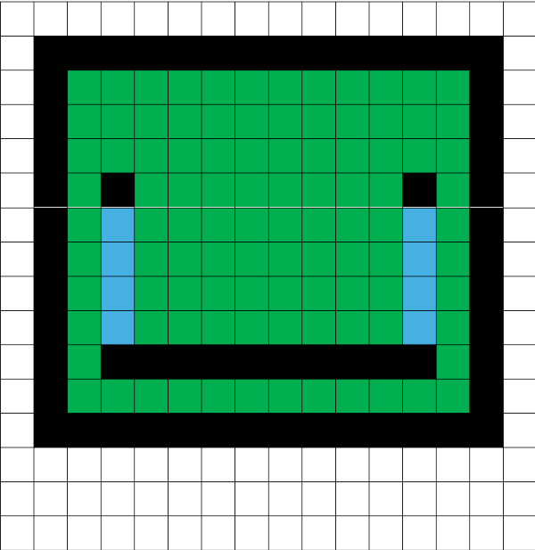
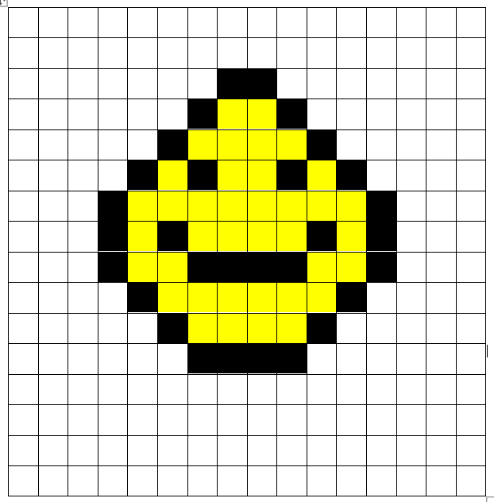
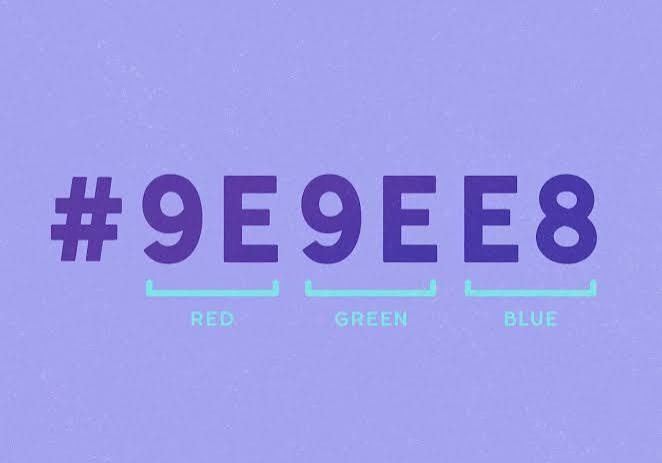
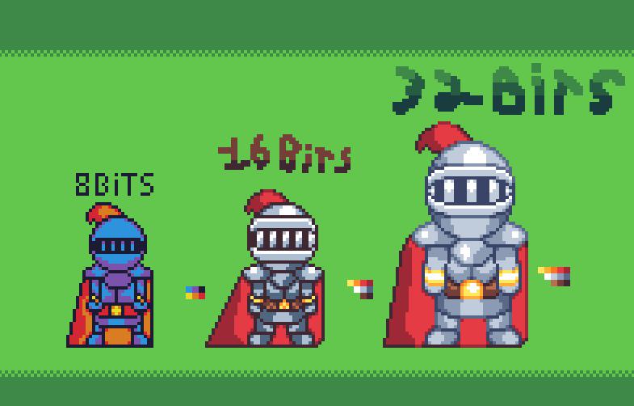

Pixels & Pictures

Avinoor:
Geometry Dash Character from Temu (24 bit RGB)
It has:
160 pixels
480 bytes
3840 bits

Alex:
This is supposed to be an egg with a face! (24 bit RGB)
It has:
68 pixels
204 bytes
1632 bits
How images are Represented in Binary
Digital images are made up of tiny coloured squares called pixels. Each individual pixel can represented using binary colours. In a 24 bit RGB image, each pixel uses up 8 bits for red, 8 bits for green and 8 bits for blue, adding up to 24 bits (3 bytes) per pixel.
An example:
A bright red pixel can be represented as:
Red: 11111111 (255)
Green: 00000000 (0)
Blue: 00000000 (0)
Each colour channel has 256 possible values, which can range from 0 to 255. when combining these 3 colour values, computers can show up to 16,777,216 different colour. the digital size of the image may very depending on the compression type, or any additional infomation stored in the fil and how the image is formatted

